Introduce a Google Map including necessary supporting resources such as Google Play Services Library and a personal API key. Additionally, support a landscape layout, validation of geolocation input, immediate mirroring any changes in this input in the view title and support for smaller small factor devices.
Continue building the MyRent app that you developed in the previous lab.
We commence by launching Google Android Map application from within MyRent. Realizing the limitations of this approach, we then proceed to integrated a Google Map into our application and in so doing gain access to its rich application programming interface (API).
This entails using:
The map may be launched from within the detailed Residence view where it is bound to the floating action button. The Up button allows a user to return to the residence details view once the geolocation has been determined (by dragging a marker into position). This is illustrated in Figure 1.
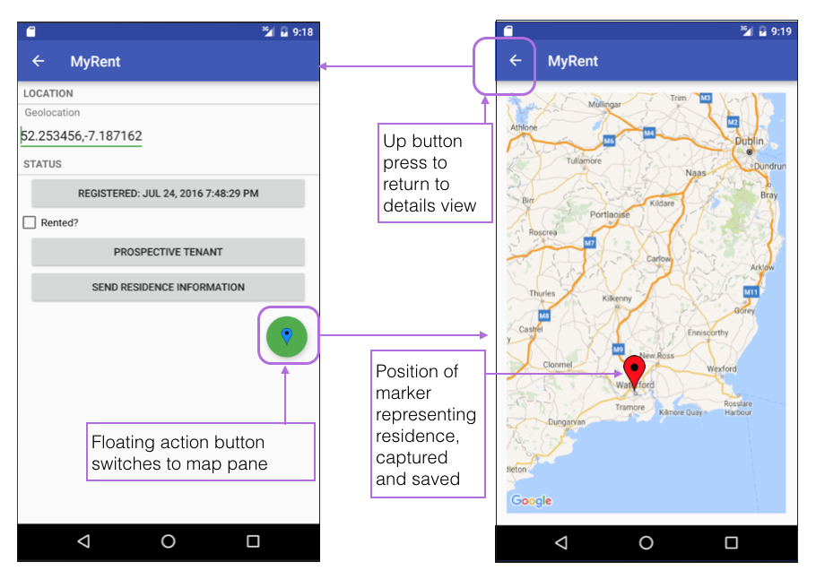
The instructions in this lab refer to development in debug mode. This means that the application you develop will not be suitable to publish on Play. Further information is available about this topic is available here and here.
This lab comprise two parts. In the first short section we show how to launch an external map application from within MyRent. The second longer lab demonstates how to embed a map within MyRent, expose the map's API and make use of some of its powerful features.
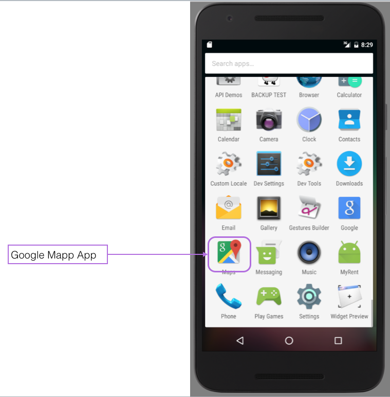
Add the following method to IntentHelper:
public static void openPreferredLocationInMap(Activity parent, String location)
{
Uri geoLocation = Uri.parse("geo:0,0?").buildUpon().appendQueryParameter("q", location).build();
Intent intent = new Intent(Intent.ACTION_VIEW);
intent.setData(geoLocation);
if (intent.resolveActivity(parent.getPackageManager()) != null)
{
parent.startActivity(intent);
}
else
{
LogHelpers.info(parent, "Couldn't call " + location + ", no receiving apps installed!");
}
}An import is required for the Uri class:
import android.net.Uri;In the above code you will notice that we are using an implicit Intent.
Invoke this helper method from within ResidenceFragment by pressing the floating action button.
Here is the code snippet to facilitate this. It should be added to ResidenceFragment:
Import the floating action button:
import android.support.design.widget.FloatingActionButton;Initialize a local floating action button variable in the onCreateView method and register a listener callback.
FloatingActionButton fab = (FloatingActionButton) v.findViewById(R.id.fab);
fab.setOnClickListener(this);Intercept and handle a click on the button in the existing onClick(...) method:
case R.id.fab :
IntentHelper.openPreferredLocationInMap(getActivity(), residence.geolocation);
break;Add the fab button xml at the end of layout/fragment_residence.xml:
<android.support.design.widget.FloatingActionButton
android:id="@+id/fab"
android:layout_width="wrap_content"
android:layout_height="wrap_content"
android:layout_gravity="bottom|end"
android:layout_margin="@dimen/fab_margin"
android:src="@drawable/ic_blue_marker"/>Provide an additional attribute
xmlns:app="http://schemas.android.com/apk/res-auto"to the root fragment_residence.xml LinearLayout node which now becomes:
<LinearLayout xmlns:android="http://schemas.android.com/apk/res/android"
android:layout_width="match_parent"
android:layout_height="match_parent"
xmlns:app="http://schemas.android.com/apk/res-auto"
android:orientation="vertical">The above is discussed in this StackOverflow article: What is the 'app' Android XML namespace.
Add the marker icon ic_blue_marker.png to the drawable folder. This becomes part of the floating action button and is referenced in the above xml button code.
Create (or replace) res/values/colors.xml with the following content:
<?xml version="1.0" encoding="utf-8"?>
<resources>
<color name="colorPrimary">#3F51B5</color>
<color name="colorPrimaryDark">#303F9F</color>
<color name="colorAccent">#4CAF50</color>
</resources>Use was made of the material palette in arriving at this color selection.
This element should be present in the file res/values/dimens.xml:
<dimen name="fab_margin">16dp</dimen>Ensure that build.gradle contains this dependency:
compile 'com.android.support:design:23.4.0'Test this feature by building and running the app. Create a new residence. Click on the floating action button. The Google Map should launch (Figure 2).
In the next step we shall expose the Google map API and use it to capture a residence's geolocation (latitude - longitude).
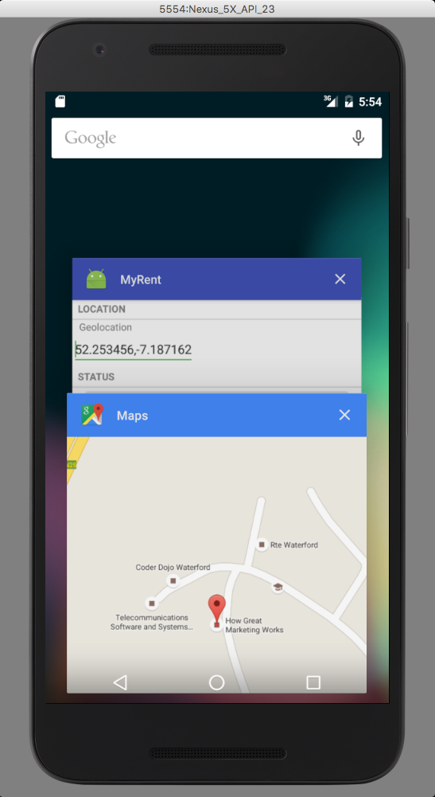
In this, the second part of the lab, we shall integrate a GoogleMap and thus gain access to its API.
We shall use the map to capture the geolocation (latitude and longitude) of a residence object. The zoom level of the map is also saved so that on returning to a particular residence's map, the zoom level at which it was last viewed will have been retained.
Start by adding a new activity named MapActivity to the activities package. We will initially use the sample code provide in the Android Getting Started documentation and continue to build on this to create the functionality we require.
package org.wit.myrent.activities;
import android.support.v7.app.AppCompatActivity;
import android.os.Bundle;
import com.google.android.gms.maps.*;
import com.google.android.gms.maps.model.*;
import org.wit.myrent.R;
public class MapActivity extends AppCompatActivity implements OnMapReadyCallback {
@Override
protected void onCreate(Bundle savedInstanceState) {
super.onCreate(savedInstanceState);
setContentView(R.layout.activity_map);
MapFragment mapFragment = (MapFragment) getFragmentManager()
.findFragmentById(R.id.map);
mapFragment.getMapAsync(this);
}
@Override
public void onMapReady(GoogleMap map) {
LatLng sydney = new LatLng(-33.867, 151.206);
map.addMarker(new MarkerOptions()
.title("Sydney")
.snippet("The most populous city in Australia.")
.position(sydney));
map.moveCamera(CameraUpdateFactory.newLatLngZoom(sydney, 13));
}
}Here is the xml for the referenced activity_map:
<?xml version="1.0" encoding="utf-8"?>
<FrameLayout
xmlns:android="http://schemas.android.com/apk/res/android"
xmlns:tools="http://schemas.android.com/tools"
android:layout_width="match_parent"
android:layout_height="match_parent"
android:paddingBottom="@dimen/activity_vertical_margin"
android:paddingLeft="@dimen/activity_horizontal_margin"
android:paddingRight="@dimen/activity_horizontal_margin"
android:paddingTop="@dimen/activity_vertical_margin"
tools:context=".activities.MapActivity">
<fragment
android:id="@+id/map"
android:name="com.google.android.gms.maps.MapFragment"
android:layout_width="match_parent"
android:layout_height="match_parent"/>
</FrameLayout>In the first part of the lab we used the floating action button to launch the external GoogleMap app. Here is the code in ResidenceFragment.onClickView responsible for this:
case R.id.fab :
IntentHelper.openPreferredLocationInMap(getActivity(), residence.geolocation);Delete this code and replace with the following:
case R.id.fab:
Intent mapIntent = new Intent(getActivity(), MapActivity.class);
startActivity(mapIntent);
break;Add an activity element for MapActivity to the manifest file:
<activity
android:name=".activities.MapActivity"
android:label="@string/app_name">
<meta-data android:name="android.support.PARENT_ACTIVITY"
android:value=".activities.ResidencePagerActivity"/>
</activity>The meta-data sets the parent activity, the one to which the Up button returns the user from the MapActivity.
Obtain an API key. How to do so is explained in detail in the Appendix at the end of this lab.
One could insert one's key directly into the manifest file. However, this would necessitate changing the manifest were different keys required for production and debug builds. Instead we shall use gradle to inject the key at build time.
Add the following snippet to your build.gradle (Module.app). Remember there are two build.gradle files. Ensure you configure the correct one.
buildTypes {
release {
minifyEnabled false
proguardFiles getDefaultProguardFile('proguard-android.txt'), 'proguard-rules.pro'
manifestPlaceholders = [ google_map_key:"Your Key Here"]
}
debug {
manifestPlaceholders = [ google_map_key:"Your Key Here"]
}This dependency is required:
compile 'com.google.android.gms:play-services:9.4.0'Add this xml to the manifest file before the closing application tag:
<application ...>
...
...
<!--Google MAP API key placeholder (keys in build.gradle)-->
<meta-data
android:name="com.google.android.maps.v2.API_KEY"
android:value="${google_map_key}"/>
</application>The android:value placeholder (google_map_key) will be replaced at build time with the correct key chosen from the build.gradle file.
Build and run MyRent. Create a new residence and using the floating action button switch to map view. You should be presented with something similar to that shown in Figure 1.
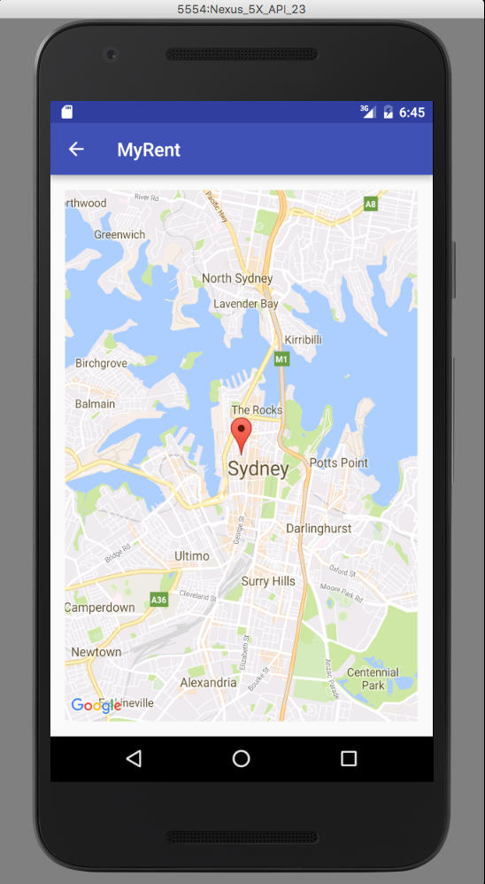
For reference, here is a sample build.gradle:
apply plugin: 'com.android.application'
android {
compileSdkVersion 23
buildToolsVersion "23.0.3"
defaultConfig {
applicationId "org.wit.myrent"
minSdkVersion 19
targetSdkVersion 23
versionCode 1
versionName "1.0"
}
buildTypes {
release {
minifyEnabled false
proguardFiles getDefaultProguardFile('proguard-android.txt'), 'proguard-rules.pro'
manifestPlaceholders = [google_map_key: "AIxxxxxxxxxxxxxxxxxxxxxxxx"]
}
debug {
manifestPlaceholders = [google_map_key: "AAIxxxxxxxxxxxxxxxxxxxxxxxx"]
debuggable true
}
}
dependencies {
compile fileTree(dir: 'libs', include: ['*.jar'])
testCompile 'junit:junit:4.12'
compile 'com.android.support:appcompat-v7:23.4.0'
compile 'com.android.support:design:23.4.0'
compile 'com.google.android.gms:play-services:9.4.0'
}Before we introduce the map code we shall modify the Residence model class allowing it to store the current zoom level of the map.
Here are the code snippets to be added to Residence.java:
//New fields
public double zoom ;//zoom level of accompanying map
private static final String JSON_ZOOM = "zoom" ; //map zoom levelConstructors:
public Residence()
{
...
zoom = 16.0f;
}
public Residence(JSONObject json) throws JSONException
{
...
zoom = json.getDouble(JSON_ZOOM);
}toJSON method
public JSONObject toJSON() throws JSONException
{
...
json.put(JSON_ZOOM , zoom);
return json;
}In preparation for customisation of the map activity we will introduce helper methods to
Add this helper class to the org.wit.android.helpers package:
package org.wit.android.helpers;
import android.content.Context;
import com.google.android.gms.maps.model.LatLng;
/**
* Class contains utility methos to:
* parse a Residence geolocation string and return a GoogleMap LatLng object,
* parse a GoogleMap LatLng object and return a Residence geolocation string.
* @author jfitzgerald
* @version October 7th 2016
*/
public class MapHelper
{
/**
*
* @param context Presently redundant, referenct to the application context
* @param geolocation The geolocation in Residence format, example: "42.122,-7.456"
* @return The geolocation expressed as a Google LatLng object
*/
public static LatLng latLng(Context context, String geolocation)
{
String[] g = geolocation.split(",");
if (g.length == 2)
{
return new LatLng(Double.parseDouble(g[0]), Double.parseDouble(g[1]));
}
return new LatLng(0, 0);
}
/**
* parse a GoogleMap LatLng object and return a Residence geolocation string.
* example: "42.122,-7.456"
* @param geo Google LatLng object representing a latitude, longitude pair
* @return A latitude longitude pair in a format suitable for use in Residence class
*/
public static String latLng(LatLng geo)
{
return String.format("%.6f", geo.latitude) + ", " + String.format("%.6f", geo.longitude);
}
}The method LatLng latLng(String geolocation) returns a LatLng object containing the latitude and longitude coordinates contained in the String geolocation.
The method String latLng(LatLng geo) returns a single string version of the coordinates contained in a LatLng object formed by concatenating the coordinates but separating them with a comma. For example:
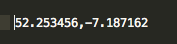
LatLng is a Google class representing a pair of latitude and longitude coordinates stored as degrees.
Please note that the use of a Context type as an argument above is not necessary at this time. We are including it here because it would be required later should we decide to introduce validation and generate Toast messages.
The completed map activity shall be possess the following features:
Add a second navigateUp method to IntentHelper to facilitate inclusion of an extra in the intent:
public static void navigateUp(Activity parent, String extraID, Serializable extraData)
{
Intent upIntent = NavUtils.getParentActivityIntent(parent);
upIntent.putExtra(extraID, extraData);
NavUtils.navigateUpTo(parent, upIntent);
}In ResidenceFragment.onClick(View v) inject the residence id as an intent extra so that the MapActivity may know with which Residence object it is dealing:
case R.id.fab:
startActivityWithData(getActivity(), MapActivity.class, EXTRA_RESIDENCE_ID, residence.id);
break;This import statment is required:
import static org.wit.android.helpers.IntentHelper.startActivityWithData;In MapActivity add this import statement:
import static org.wit.android.helpers.IntentHelper.navigateUp;Add a Residence id field to MapActivity:
/*
* We use the current residence when navigating back to parent class - ResidenceFragment as
* this is required in ResidenceFragment onCreate.
*/
Long resId;In MapActivity.onCreate, initialize the residence id:
resId = (Long)getIntent().getSerializableExtra(ResidenceFragment.EXTRA_RESIDENCE_ID);Intercept and handle an Up button click by overriding onOptionsItemSelected:
@Override
public boolean onOptionsItemSelected(MenuItem item)
{
switch (item.getItemId())
{
case android.R.id.home:
navigateUp(this, ResidenceFragment.EXTRA_RESIDENCE_ID, resId);
return true;
default: return super.onOptionsItemSelected(item);
}
}Build and run MyRent, create a new residence and navigate to the map. Then check that the up button returns you to the residence details screen.
Add the following code to MapActivity:
Imports:
import org.wit.android.helpers.MapHelper;
import org.wit.myrent.app.MyRentApp;
import org.wit.myrent.models.Residence;Implement additional interface GoogleMap.OnMarkerDragListener:
public class MapActivity extends AppCompatActivity
implements OnMapReadyCallback,
GoogleMap.OnMarkerDragListener {
...
}Add residence, app and map fields:
Residence residence; // The residence associated with this map pane
MyRentApp app;
GoogleMap map;Initialize app and residence fields in onCreate:
app = (MyRentApp)getApplication();
residence = app.portfolio.getResidence(resId);In onMapReady make the following changes:
this.map = map;Stil in onMapReady, make the marker draggable by setting its draggable property to true:
MarkerOptions options = new MarkerOptions()
.title("Sydney")
.snippet("The most populous city in Australia.")
.draggable(true)
.position(sydney);
map.addMarker(options);Implement the OnMarkerDragListener methods:
@Override
public void onMarkerDragStart(Marker marker) {
}
@Override
public void onMarkerDrag(Marker marker) {
}
/**
* When marker drag ends, save Residence model geolocation and zoom.
* @param marker The map marker representing current residence geolocation.
*/
@Override
public void onMarkerDragEnd(Marker marker) {
residence.geolocation = MapHelper.latLng(marker.getPosition());
residence.zoom = map.getCameraPosition().zoom;
map.animateCamera(CameraUpdateFactory.newLatLng(marker.getPosition()));
}Build, run and test that the marker may now be dragged.
Implementing GoogleMap.OnInfoWindowClickListener enables a toggle effect to be imparted to a marker so that when it is first clicked the string defined in the MarkerOptions.snippet string is displayed in what is referred to as an infowindow and a further click on the infowindow closes it.
public class MapActivity extends AppCompatActivity
implements OnMapReadyCallback,
GoogleMap.OnInfoWindowClickListener,
{
...
}
/**
* Click an open infowindow to close it.
* Click on a marker to open an infowindow
* @param marker The marker associated with this infowindow.
*/
@Override
public void onInfoWindowClick(Marker marker) {
marker.hideInfoWindow();
}Do not forget to register the listener:
@Override
public void onMapReady(GoogleMap map) {
...
map.setOnInfoWindowClickListener(this);
...
}Build, run and verify that this feature works correctly.
We are now in a position to finalize implementation of onMapReady. It remains to:
LatLng latLng = MapHelper.latLng(... as follows: LatLng latLng = MapHelper.latLng(this, residence.geolocation);
MarkerOptions options = new MarkerOptions()
.title("Residence")
.snippet("GPS : " + latLng.toString())
.draggable(true)
.position(latLng); map.moveCamera(CameraUpdateFactory.newLatLngZoom(latLng, (float)residence.zoom));onCameraIdle() as follows:public class MapActivity extends AppCompatActivity
implements OnMapReadyCallback,
GoogleMap.OnMarkerDragListener,
GoogleMap.OnInfoWindowClickListener,
GoogleMap.OnCameraIdleListener
{
...
...
} @Override
public void onMapReady(GoogleMap map) {
...
...
map.setOnCameraIdleListener(this);
...
...
} /**
* GoogleMap.OnCameraIdleListener
* We implement this interface to capture zoom when marker not dragged but zoom changed
* example by pinching screen.
* When google map camera stops moving we capture the zoom and save to model.
*/
@Override
public void onCameraIdle() {
residence.zoom = map.getCameraPosition().zoom;
}Finally, to ensure the infowindow displays the correct residence geolocation when a marker is clicked, implement OnMarkerClickListener, register it in onMapReady and implement onMarkerClick, all as shown below:
public class MapActivity extends AppCompatActivity
implements OnMapReadyCallback,
GoogleMap.OnMarkerDragListener,
GoogleMap.OnInfoWindowClickListener,
GoogleMap.OnMarkerClickListener {
...
...
} @Override
public void onMapReady(GoogleMap map) {
...
map.setOnMarkerClickListener(this);
...
} /**
* The purpose of including this method is to update the info window information
* with the geolocation of the current position of the marker.
* @param marker The marker whose info window being refreshed
* @return Returns false indicating default behaviour, i.e. open info window.
*/
@Override
public boolean onMarkerClick(Marker marker) {
LatLng latLng = MapHelper.latLng(this, residence.geolocation);
marker.setSnippet("GPS : " + latLng.toString());
return false;
}Build run and test the application.
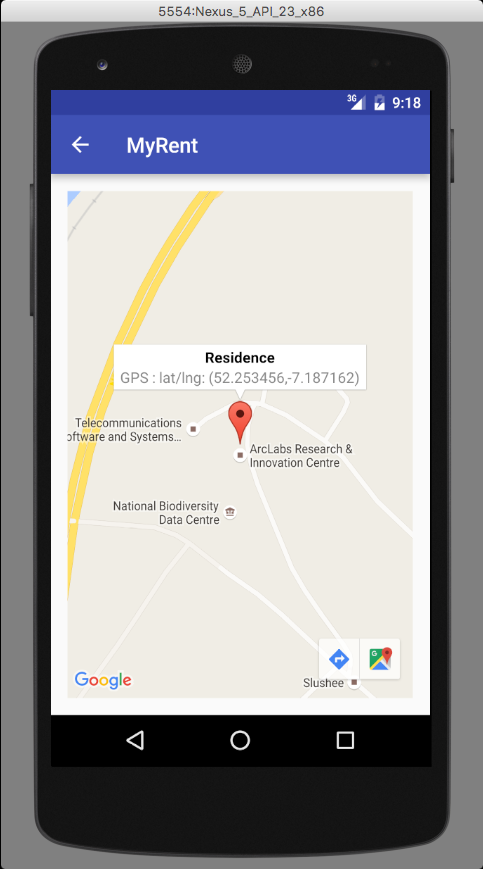
Note that it is possible to prevent the soft keyboard opening automatically on launching an activity y using this attribute:
android:windowSoftInputMode="stateHidden|adjustResize"In the case of ResidencePagerActivity its inclusion might typically result in the following:
<activity
android:name=".activities.ResidencePagerActivity"
android:windowSoftInputMode="stateHidden|adjustResize"
android:label="@string/app_name" >
<meta-data android:name="android.support.PARENT_ACTIVITY"
android:value=".activities.ResidenceListActivity"/>
</activity>For reference, here is the completed MapActivity class:
package org.wit.myrent.activities;
import android.support.v7.app.AppCompatActivity;
import android.os.Bundle;
import android.view.MenuItem;
import com.google.android.gms.maps.*;
import com.google.android.gms.maps.model.*;
import org.wit.myrent.R;
import static org.wit.android.helpers.IntentHelper.navigateUp;
import org.wit.android.helpers.MapHelper;
import org.wit.myrent.app.MyRentApp;
import org.wit.myrent.models.Residence;
public class MapActivity extends AppCompatActivity
implements OnMapReadyCallback,
GoogleMap.OnMarkerDragListener,
GoogleMap.OnInfoWindowClickListener,
GoogleMap.OnCameraIdleListener,
GoogleMap.OnMarkerClickListener
{
/*
* We use the current residence when navigating back to parent class - ResidenceFragment as
* this is required in ResidenceFragment onCreate. The navigateUp
*/
Long resId;
Residence residence; // The residence associated with this map pane
MyRentApp app;
GoogleMap map;
@Override
protected void onCreate(Bundle savedInstanceState) {
super.onCreate(savedInstanceState);
setContentView(R.layout.activity_map);
MapFragment mapFragment = (MapFragment) getFragmentManager()
.findFragmentById(R.id.map);
mapFragment.getMapAsync(this);
resId = (Long)getIntent().getSerializableExtra(ResidenceFragment.EXTRA_RESIDENCE_ID);
app = (MyRentApp)getApplication();
residence = app.portfolio.getResidence(resId);
}
@Override
public void onMapReady(GoogleMap map) {
this.map = map;
map.setOnMarkerDragListener(this);
map.setOnInfoWindowClickListener(this);
map.setOnMarkerClickListener(this);
map.setOnCameraIdleListener(this);
LatLng latLng = MapHelper.latLng(this, residence.geolocation);
MarkerOptions options = new MarkerOptions()
.title("Residence")
.snippet("GPS : " + latLng.toString())
.draggable(true)
.position(latLng);
map.addMarker(options);
map.moveCamera(CameraUpdateFactory.newLatLngZoom(latLng, (float)residence.zoom));
map.setOnInfoWindowClickListener(this);
}
@Override
public boolean onOptionsItemSelected(MenuItem item)
{
switch (item.getItemId())
{
case android.R.id.home:
navigateUp(this, ResidenceFragment.EXTRA_RESIDENCE_ID, resId);
return true;
default: return super.onOptionsItemSelected(item);
}
}
/**
* GoogleMap.OnMarkerDragListener
* @param marker
*/
@Override
public void onMarkerDragStart(Marker marker) {
}
/**
* GoogleMap.OnMarkerDragListener
* @param marker
*/
@Override
public void onMarkerDrag(Marker marker) {
}
/**
* GoogleMap.OnMarkerDragListener
* When marker drag ends, save Residence model geolocation and zoom.
* @param marker The map marker representing current residence geolocation.
*/
@Override
public void onMarkerDragEnd(Marker marker) {
residence.geolocation = MapHelper.latLng(marker.getPosition());
residence.zoom = map.getCameraPosition().zoom;
map.animateCamera(CameraUpdateFactory.newLatLng(marker.getPosition()));
}
/**
* GoogleMap.OnInfoWindowClickListener
* Click an open infowindow to close it.
* Click on a marker to open an infowindow
* @param marker The marker associated with this infowindow.
*/
@Override
public void onInfoWindowClick(Marker marker) {
marker.hideInfoWindow();
}
/**
* GoogleMap.OnMarkerClickListener
* The purpose of including this method is to update the info window information
* with the geolocation of the current position of the marker.
* @param marker The marker whose info window being refreshed
* @return Returns false indicating default behaviour, i.e. open info window.
*/
@Override
public boolean onMarkerClick(Marker marker) {
LatLng latLng = MapHelper.latLng(this, residence.geolocation);
marker.setSnippet("GPS : " + latLng.toString());
return false;
}
/**
* GoogleMap.OnCameraIdleListener
* We implement this interface to capture zoom when marker not dragged but zoom changed
* example by pinching screen.
* When google map camera stops moving we capture the zoom and save to model.
*/
@Override
public void onCameraIdle() {
residence.zoom = map.getCameraPosition().zoom;
}
}The application at the end of this lab is available for reference here: myrent-11
We recommend that you become familiar with the official documentation for Google Maps Android API v2.
It is necessary to obtain an API key before using the Google Maps API. This can be achieved as follows:
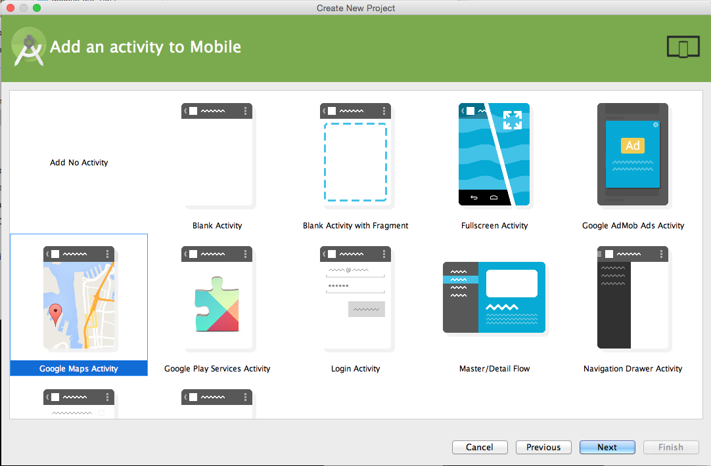
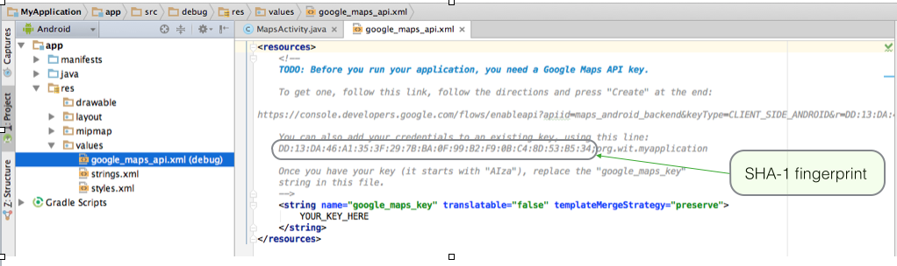
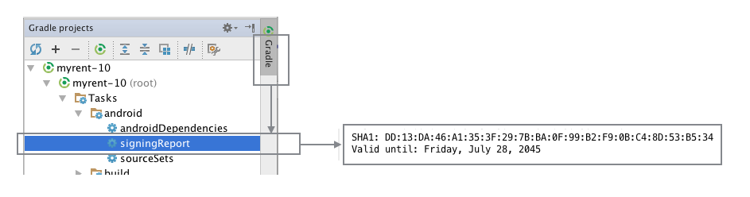
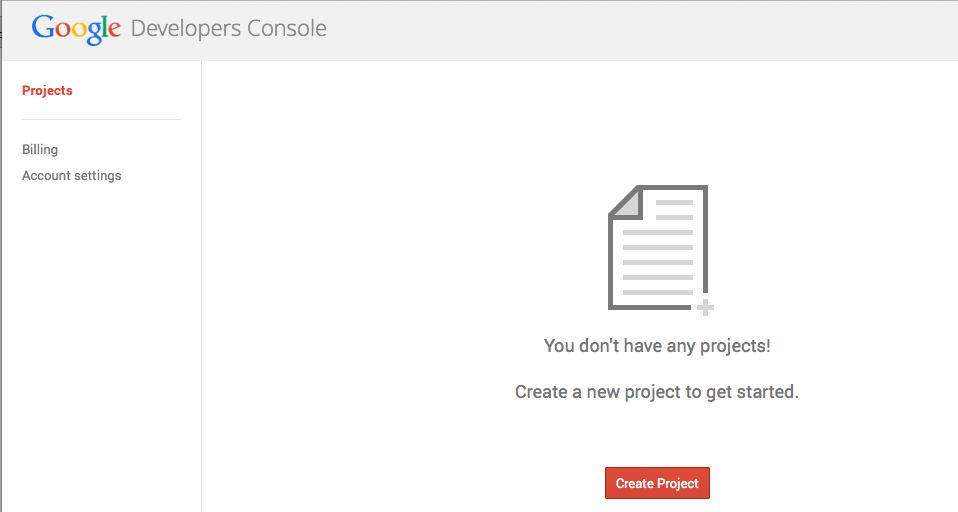 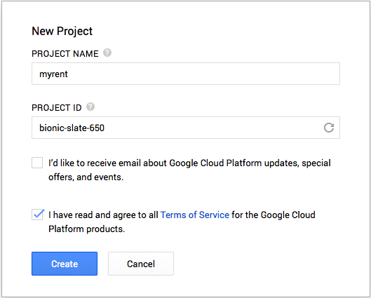
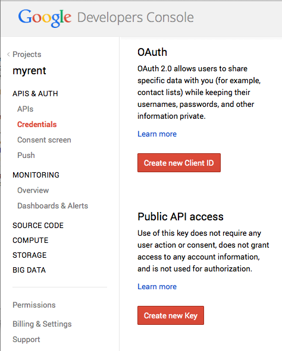
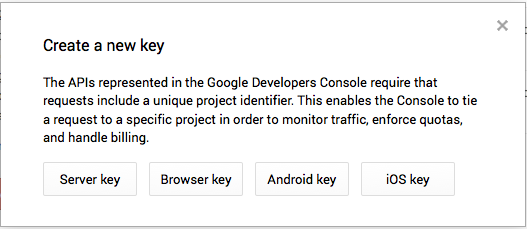
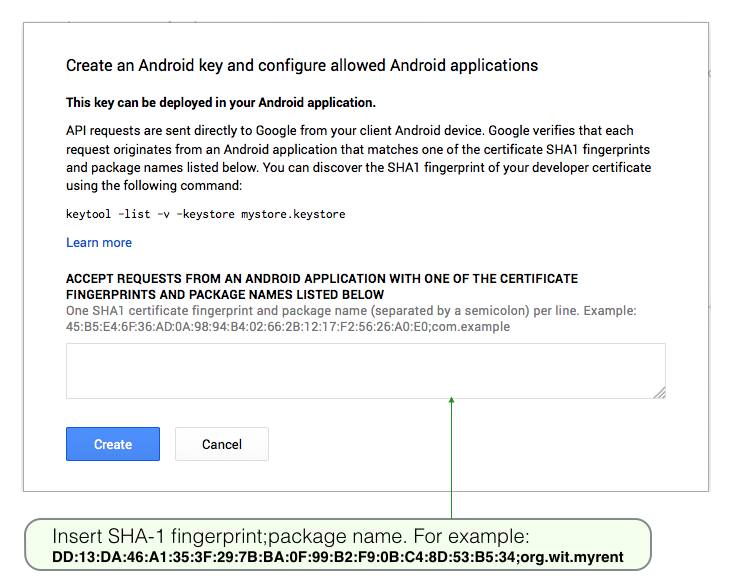
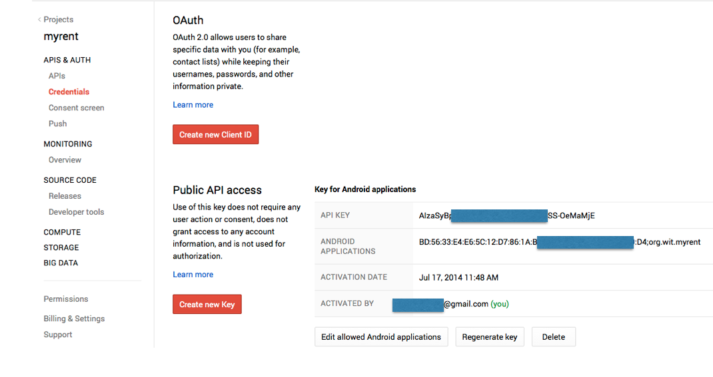
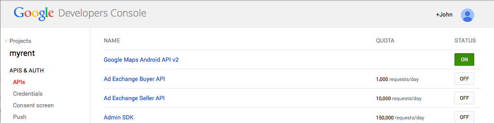
Here is a summary of the data that should be retained securely:
You may use the same key if you build MyRent on a different computer. However, it will be necessary to obtain the SHA-1 fingerprint for that device and add the package name and SHA-1 certificate fingerprint to your credentials console. An example is shown in Figure 11.
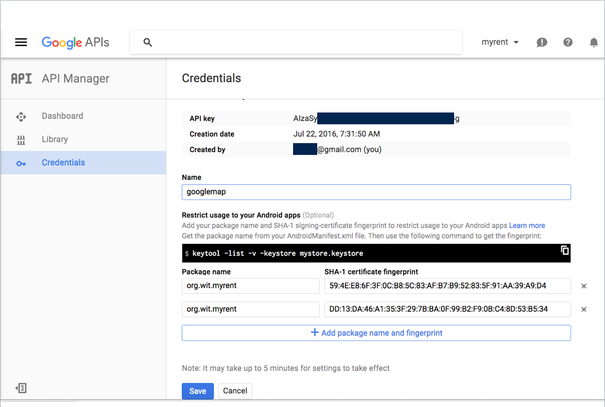
{kind=link}